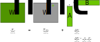

LoRA (Hu et al., 2021) is a now popular alternative to the full finetuning of a Large Language Models (LLMs): instead of tuning the billions of weights of the full model, we add small “adapter” weight matrices that modify the original weight matrices, and tune those instead.
This blogpost dives deeper into a curious behavior: although LoRA is commonly seen an drop-in for full finetuning, its interaction with weight decay means it solves a different optimization problem than full finetuning. Namely, one where the solution weights are regularized towards the frozen base model \((W \rightarrow W_{\text{init}})\), instead of \(W \rightarrow 0\) as in full finetuning.
This means, given increasingly more resources (even equalling that of full finetuning), LoRA does not increasingly better approximate full finetuning, because its objective function is implicitly different to that of full finetuning. This, depending on use case can either be seen as a bug or a feature, but is something practitioners should explicitly account for.
Recap: Finetuning
With LLMs, we typically finetune an initial model (that is “good” on a wide range of text-to-text tasks) to boost performance on a specific task of interest (e.g. generating database queries from natural language). We do this in a two-step process:
- First, creating a finetuning training dataset \({(x_i, y_i)_n}\), which contain pairs of inputs \(x\) and targets \(y\).1
- Optimize the weights of the initial model such that our finetuning training dataset \({(x_i, y_i)_n}\) becomes more “probable”. The idea here is that a model that is more likely to generate the correct answers \(y\) on \(x\)’s from our training set, will generalize and also be more likely to generate \(y\)’s on new \(x\)’s.
Full Finetuning
Full finetuning means we tune all the weights of the model. For a model such as GPT-3 175B (Brown et al., 2020), this means giving our optimization algorithm 175 billion numbers it can “dial” up and down as needed to make our finetuning training data more “probable”. Let’s dig a bit deeper, and more concretely define what we mean by weights here.
Each layer in a Transformer is primarily made of two components: a multihead attention network, followed by a feedforward network. This means the bulk of the “weights” that make up each layer are stored in six matrices2, as shown. \(\theta\) then, is used as shorthand refer to all the weights, stored in all the matrices across all the layers of the model.
In full finetuning, every single weight in \(\theta\) is opened up for updating. Our aim is to produce updated weights that minimize the negative log likelihood (NLL) as shown on the left3. There’s no closed form way to get the “optimal” weights, so we solve the optimization problem by repeatedly applying many steps of gradient descent, as shown on the right.
Now, directly doing gradient descent this way would quickly lead to overfitting4, so we usually regularize the problem. With LLMs, the regularization tool of choice is usually weight decay. Specifically, when using vanilla SGD5, weight decay is equivalent to having a term in the loss equal to the squared sum of the weights:
\[R(\theta)=\sum_i \sum_j[W_{{\color{RoyalBlue}q}}^{\color{PineGreen}{1}}]_{ij}^2+\cdots\]
Hence, the overall objective now is as follows (where \(\lambda\) is a hyperparameter controlling the strength of the weight decay):
\[\min_{\color{YellowOrange}{\theta}} \biggl[\underbrace{-\log P_{\color{YellowOrange}{\theta}}({\color{PineGreen}{y}} \mid {\color{RoyalBlue}{x}})}_{\color{BrickRed}{L}} + \frac{\lambda}{2} R({\color{YellowOrange}{\theta}})\biggr]\]
Differentiating this to objective to get the gradient, we notice the gradient update has two distinct terms6: the first corresponding to the minimizing the negative log likelihood as before, and a new second term \(-\alpha\lambda w\) that pushes the weight towards the origin \(0\).
\[ % https://tex.stackexchange.com/a/9477 \def\mathunderline#1#2{\color{#1}\underline{{\color{black}#2}}\color{black}} \begin{align*} &{\color{YellowOrange}{w}} \leftarrow {\color{YellowOrange}{w}} - \alpha \left(\mathunderline{BrickRed}{\frac{\partial \color{BrickRed}{L}}{\partial \color{YellowOrange}{w}}} + \mathunderline{LimeGreen}{\frac{\lambda}{2} \frac{\partial R}{\partial \color{YellowOrange}{w}}} \right)\\ \Rightarrow &{\color{YellowOrange}{w}} \leftarrow {\color{YellowOrange}{w}} - \alpha \left(\mathunderline{BrickRed}{\frac{\partial \color{BrickRed}{L}}{\partial \color{YellowOrange}{w}}} + \mathunderline{LimeGreen}{\lambda {\color{YellowOrange}{w}}} \right)\\ \Rightarrow &{\color{YellowOrange}{w}} \leftarrow {\color{YellowOrange}{w}} - \alpha \mathunderline{BrickRed}{\frac{\partial \color{BrickRed}{L}}{\partial \color{YellowOrange}{w}}} - \alpha \mathunderline{LimeGreen}{\lambda {\color{YellowOrange}{w}}} \end{align*}\]
Which means the regularized problem now looks like:
In summary, adding a squared sum of weights loss is equivalent to subtracting a scaled version of each weight at each gradient descent step. This shifts the minima towards where the weights are closer to \(0\)7; i.e. no one weight can have extremely large effects on the predictions of the model.
Full finetuning is highly flexible, but also extremely memory intensive: you generally need at least 3x the memory8 required for the model itself, to account for its gradients and optimizer state. This was not an issue when models were \(O(100M)\) params, but is certainly so today where they’re regularly \(O(10B)\) to \(O(100B)\) params. Moreover, if you have 10 sub-tasks in your application (where you’re tuning the model for each task), full finetuning requires you to host 10 versions of the model (as if hosting 1 isn’t expensive as is!).
LoRA finetuning
LoRA (Low Rank Adapter) finetuning takes a different approach: instead of tuning the massive weight matrices of an LLM directly, we use a pair of small adapter matrices for each weight matrix we want to tune, of the following form:

That is, for each initial, frozen weight \(W_{\text{init}}\), we have adapter matrices \(A\) and \(B\). These two matrices are multiplied together to form \(\Delta W\), which is a low rank “adjustment” matrix for \(W_{\text{init}}\), forming the adapted, tuned matrix \(W\). This cuts the number of free parameters significantly: assume the original matrix \(W_{\text{init}}\) is \(4,096 \times 16,384\). In the original, we’d have 67 million parameters to tune just for this one weight matrix, as follows:
\[4,096 \times 16,384 = 67,108,864 \approx 67 \text{ million}\]
With LoRA with rank \(r=4\), we only have:
\[4,096 \times 4 + 4 \times 16,384 = 81,920\]
This is less than 0.1% of the original number of parameters; the added overhead of storing 3 variants of these values (weights, gradients and optimizer states) is negligible compared to the memory used by the model itself.
Moreover, since the initial weights are “shared” across all the finetuning runs, at inference time we only need to load one copy of the initial model to be shared across many finetuned versions, with inference for each task using their own per-task adapter matrices. This makes having a “per-task” tuned LLM in an application not only viable, but easy.
The Interaction
Now that we’ve covered what LoRA is, we can begin to discuss how it interacts with weight decay to produce a feature/bug. Since \(A\) and \(B\) are the “actual” matrices we’re performing gradient descent on, the weight decay term in the objective looks like this, in that we’re moving the minima towards where the adapter matrices are closer to 0:
\[R(\theta)=\sum_i \sum_j[A_{{\color{RoyalBlue}q}}^{\color{PineGreen}{1}}]_{ij}^2+ \sum_i \sum_j[B_{{\color{RoyalBlue}q}}^{\color{PineGreen}{1}}]_{ij}^2+ \cdots\]
Let’s contrast this with the formulation in full finetuning:
- In full finetuning, we have \(W \rightarrow 0\), in that the weight decays to 0 directly.
- However, in LoRA, because \(A\) and \(B\) decay to 0, in effect we have \(W \rightarrow W_{\text{init}}\) instead.
This means LoRA solutions are biased towards the original frozen weight matrices, unlike in full finetuning, where they’re biased towards zero. And this behavior does not go away with increasing the LoRA rank \(r\) - one could increase it all the way to infinity(!), and the optimization process would still be biased towards the original frozen weights instead of zero. That is, even in the limit, LoRA does not approximate full finetuning, but a different objective.
A fix
If we wanted the full adapted matrix to go towards zero (as would happen in full finetuning), we’d need a regularization term where the entire adapted weight matrix goes to zero, as follows:
\[\begin{align*} R(\theta)&=\sum_i \sum_j[W_{{\color{RoyalBlue}q}}^{\color{PineGreen}{1}}]_{ij}^2+\cdots\\ &=\sum_i \sum_j[W_{{\color{RoyalBlue}q\color{Black}\text{,init}}}^{\color{PineGreen}{1}} + A_{{\color{RoyalBlue}q}}^{\color{PineGreen}{1}}B_{{\color{RoyalBlue}q}}^{\color{PineGreen}{1}}]_{ij}^2+\cdots \end{align*}\]
This is actually straightforward to derive, and yields a pair of update equations that can be implemented much like standard weight decay. First, start at the core definition of weight decay, which involves calculating the gradient of the weight w.r.t. the regularization term:
\[{\color{YellowOrange}{w}} \leftarrow {\color{YellowOrange}{w}} - \alpha \left(\frac{\partial \color{BrickRed}{L}}{\partial \color{YellowOrange}{w}} + \frac{\lambda}{2} \frac{\partial R}{\partial \color{YellowOrange}{w}} \right)\]
Second, compute the gradient of \(A\) and \(B\)9 w.r.t. the “corrected” \(R(\theta)\) above. This yields:
\[\begin{align*} \frac{\partial R}{\partial \color{YellowOrange}{A}}&=2 (W_{\text{init}} + {\color{YellowOrange}{A}}{\color{PineGreen}{B}}) {\color{PineGreen}{B^T}}\\ \frac{\partial R}{\partial \color{YellowOrange}{B}}&=2 {\color{PineGreen}{A^T}}(W_{\text{init}} + {\color{PineGreen}{A}}{\color{YellowOrange}{B}}) \end{align*}\]
Inserting back into the definition of weight decay, we get the following concrete update equations for \(A\) and \(B\):
\[\begin{align*} {\color{YellowOrange}{A}} &\leftarrow {\color{YellowOrange}{A}} - \alpha \frac{\partial \color{BrickRed}{L}}{\partial \color{YellowOrange}{A}} - \alpha \lambda (W_{\text{init}} + {\color{YellowOrange}{A}}{\color{PineGreen}{B}}) {\color{PineGreen}{B^T}}\\ {\color{YellowOrange}{B}} &\leftarrow {\color{YellowOrange}{A}} - \alpha \frac{\partial \color{BrickRed}{L}}{\partial \color{YellowOrange}{A}} - \alpha \lambda {\color{PineGreen}{A^T}}(W_{\text{init}} + {\color{PineGreen}{A}}{\color{YellowOrange}{B}}) \end{align*}\]
In code
This is what the standard formulation of weight decay in the Optax (Babuschkin et al., 2020) library looks like. It’s quite clean: add a weight_decay (\(\lambda\)) scaled version of the parameter p to its current update g10.
To modify this to implement the math we just described above takes some of extra code, mostly in extracting the W_init, A and B matrices11. The core logic is just the two lines 18 and 20.
def update_fn(updates, state, params):
def per_param_update_fn(path, update, param):
# Get the params dict for the layer as a whole.
param_name = path[-1].key
# If current parameter is an adapter matrix.
if param_name in ['kernelA', 'kernelB']:
layer_params = params
for dict_key in path[:-1]:
layer_params = layer_params[dict_key.key]
# Extract the initial weight matrix and adapter matrices.
W_init = layer_params['kernel']
A = layer_params['kernelA']
B = layer_params['kernelB']
# Compute the corrected decay term.
if param_name == 'kernelA':
decay_term = (W_init + A@B)@B.T
else:
decay_term = A.T@(W_init + A@B)
# If current parameter is *not* an adapter matrix, use
# default version of weight decay.
else:
decay_term = param
return update + weight_decay * decay_term
if params is None:
raise ValueError(base.NO_PARAMS_MSG)
updates = jax.tree_util.tree_map_with_path(
per_param_update_fn, updates, params)
return updates, stateConclusion
In summary, LoRA has a different implicit objective than full finetuning, but it’s also easy to correct if desired. That’s it, really!
To my knowledge, there isn’t literature documenting this interaction of LoRA with weight decay in depth. Conjecturing purely from first principles12, I’d argue the default behavior is both a feature and a bug, depending on the amount of data - when there’s a very few number of training points, it is a feature because it regularizes the updated model to stay close to the initial, “generally-capable” one. However, it’s a bug when given large amounts of data, as the optimization process is less capable of straying too far from the base weights, even if it would aid end-task performance.
That said, as neat as the math is, empirical results are the only truth here. With so many free parameters, it may well turn out to be in practice there are solutions just as good (when regularized to be close to \(W_{\text{init}}\)) as full finetuning (regularized close to \(0\)) given enough capacity.
Appendix A: Momentum and Weight Decay
One odd thing you’ve likely noticed is that I spent a substantial amount of time explicitly working out the gradient for the regularizer term \(R(\theta)\), instead of just directly absorbing it into \(L\) and letting autodiff take care of all this for me. That’s because the equivalency (weight decay of gradients = adding an \(L_2\) regularization term to the loss) is only true for non-momentum based optimizers like vanilla SGD, not momentum based optimizers such as Adam(Kingma & Ba, 2015) or AdamW (Loshchilov & Hutter, 2019).
The AdamW paper13 is a solid, in-depth read to understand why this is the case, but in brief: to do weight decay we want to subtract away a scaled version of the parameter’s value at the current timestep. However, adding an \(L_2\) regularization term to the loss directly means the regularization gradient is added to the momentum state of the optimizer: the past value of the parameter now influence its weight decay, not just the current value. The overall effect here is parameters which had “large” values early in training are regularized less, defeating the point of weight decay!
The way modern optimization libraries such as Optax implement AdamW is by first implementing Adam’s transformation of the gradient as a seperate subroutine \(\text{adam}\), that:
scale_by_adam here that does exactly this.- takes in the NLL loss gradient \(\frac{\partial L}{\partial w} = g\)
- as well as past optimizer states \((m, v)\)
- return a “transformed” gradient, an update \(u_t\), that is, \(\text{adam}(g, m, v) \rightarrow u\).
From there on out, the weight decay looks just like it did before, but swapping in \(u\).
\[{\color{YellowOrange}{w}} \leftarrow {\color{YellowOrange}{w}} - \alpha \left(u + \frac{\lambda}{2} \frac{\partial R}{\partial \color{YellowOrange}{w}} \right)\]
Which means, a version of our corrected (decays to 0) LoRA update that is compatible with AdamW looks like:
\[\begin{align*} {\color{YellowOrange}{A}} &\leftarrow {\color{YellowOrange}{A}} - \alpha u - \alpha \lambda (W_{\text{init}} + {\color{YellowOrange}{A}}{\color{PineGreen}{B}}) {\color{PineGreen}{B^T}}\\ {\color{YellowOrange}{B}} &\leftarrow {\color{YellowOrange}{A}} - \alpha u - \alpha \lambda {\color{PineGreen}{A^T}}(W_{\text{init}} + {\color{PineGreen}{A}}{\color{YellowOrange}{B}}) \end{align*}\]
The code snippet above (implementing the decay to 0 LoRA) is actually already compatible with AdamW in Optax. This very nice behavior comes mostly from free because of the fact AdamW in Optax is already a decomposed chain of three operators (\(\text{adam}\), weight decay, and then scaling by the learning rate); Optax’s actual implementation is as follows:
All we’d need to do is create a new optimizer, where we swap in the transform.add_decayed_weights with our custom version, and we’d be set.
References
Footnotes
In the database query example, the \(x\)’s can be strings in English, and the \(y\)’s are then strings corresponding to the query translated from English into the query schema.↩︎
Note that if you use a GLU-variant activation (Shazeer, 2020), then you add in a 7th “gating” weight matrix.↩︎
This is the precise mathematical definition of what we just described: a function whose minimization makes our finetuning training data \({(x_i, y_i)_n}\) “more likely” to be generated.↩︎
In that the weights would all be optimized to perfectly repeat \(y_i\) for any \(x_i\) in the finetuning training set, at the expense of performing much worse on any \(x_i\) not in the training set.↩︎
Stochastic Gradient Descent, a.k.a. the core workhorse of deep learning. In practice we use more sophisticated momentum-based methods, whose impact is described in Appendix A.↩︎
This directly stems from the fact that the gradient of a sum (here, the two terms are NLL and regularization) equals the sum of the gradients (of each term).↩︎
To reason why this is true, notice that the larger the weight, the “more” of it is subtracted away from itself.↩︎
Assuming you’re using an optimizer with some form of momentum (vanilla SGD doesn’t need an optimizer state). It goes up to 4x for Adam, as it has two states: an exponential moving average of both the gradient means, and the gradient-squared means.↩︎
We’re dropping the \(q, k,...\) subscripts as the derivation is identical for all the weight matrices.↩︎
We add terms to the update, as the subtraction of the update happens at the very end.↩︎
This exact formulation assumes the adapters are defined inside the same layer as the original matrix; that is the params dict looks like
{'params': {'kernel': ..., 'kernelA': ..., 'kernelB': ...}}. The actual implementation will depend on how the LoRA adapters have been defined (even though the underlying math will remain the same).↩︎Which, in classic deep learning fashion could turn out to be wholly incorrect.↩︎
Which pointed out this non-equivalency, and produced a version of Adam that “decoupled” weight decay.↩︎
Citation
@online{shafkat2023,
author = {Shafkat, Irhum},
title = {LoRA and {Weight} {Decay}},
date = {2023-09-27},
url = {https://irhum.github.io/blog/lorawd/},
langid = {en}
}